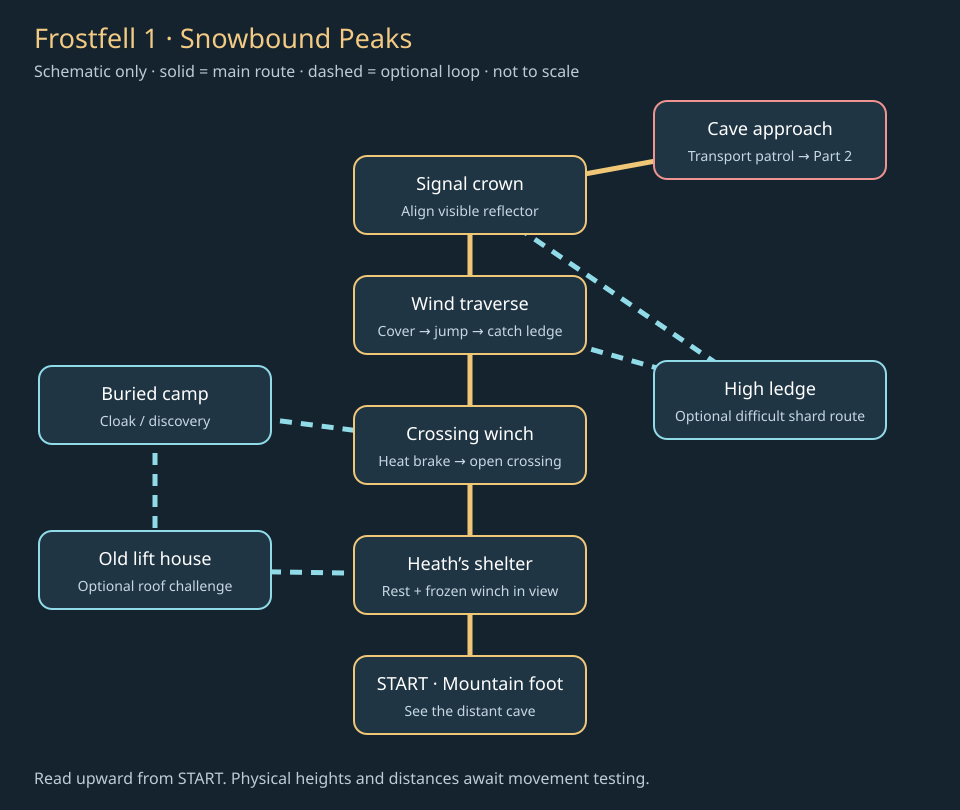
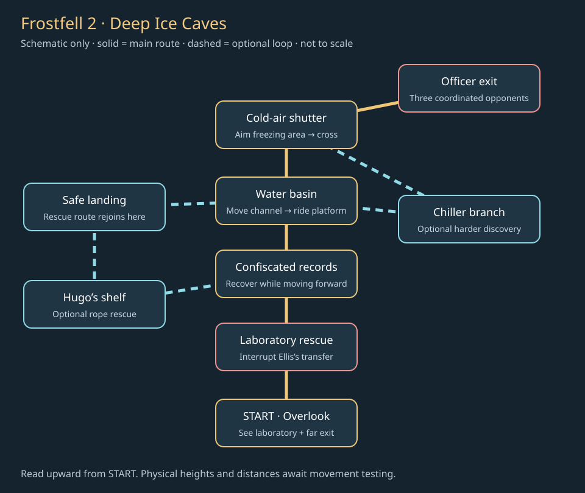

Design review · October 5, 2026 · proposals only
Make the journey make sense.
Reviewed all 16 campaign parts. The next step is stronger connections between geography, objectives and rewards—not simply adding more objects.
- Test the isolated Ruined Keep beta before rebuilding another playable level.
- Keep distinct experiences such as ship steering, disguise and tower traversal. Rebuild button-combination puzzles around physical, visible problems.
- Replace repeated component-return errands with objectives that carry you forward.
- Use Frostfell to test a mountain approach, urgent rescue and spatial water manipulation—not another three-button sequence.
What the code actually shows
Confirmed: the old prison has an ascending service route and dialogue mentioning stairs; the lift needs clearer necessity. Frostfell’s two halves both require a fetch-and-return. The tower hint repeats itself. Thunder Cliffs has stairs to its lift’s upper area, so the lift’s purpose needs clarification.
Design risks, not proven bugs: too much travel between interactions, too many serial locks, weak reward visibility, and unclear safe routes for rescued people. These require observation in play, not a claim that a static audit has proved them.
Important correction: different state machines and story labels do not establish puzzle variety. The player reports that many still feel like guessing three controls. Water, mirrors and shelves are useful themes, but their present execution must earn its place through visible interaction. Patrol hunts and alternative approaches are separate strengths.
A different review standard
The failure: this audit initially credited different state logic and lore as evidence of different play. That was too generous. The user’s play experience—repetitive guessing and weak visual feedback—takes priority over those descriptions.
- Strip the names: describe only what the player does. “Press three nearby controls until a crossing unlocks” is one family, whether the props are valves, bells or runes.
- Compare the actions: changing a code, palette or reward does not create a new interaction. State-setting toggles and order-entry buttons can both be the same experience of guessing a small combination.
- Show the evidence: record an uncut attempt from the normal game camera with the starting scene, player actions, visible consequences, a mistake and recovery. Teleporting or setting quest flags is not evidence of playability.
- Try it without instructions: temporarily hide the journal solution and explanatory toast. Can the scene support a reasonable prediction? Does each action communicate its result? If not, fix the physical presentation first.
- Build one example: prove one compact interaction before expanding the level or duplicating its mechanism. Maps establish intended relationships; they do not establish enjoyment.
- Human gate: user playtesting decides whether the prototype is satisfying and sufficiently different. Automated checks establish correctness and safety only.
Status of this packet: code inspected and initial areas loaded; document layout checked. Campaign puzzles have not received new unassisted playthroughs or interaction recordings in this pass. Frostfell maps are proposals. No claim of proven fun, clarity or variety.
Examples classified by the actual player action
- Deep Ice Caves main crossing: three nearby controls change water level, freeze state and drain state. The solver checks the target height. This is more than literal order matching in code, but still belongs to the small-console combination family in the reported experience.
- Deep Ice Caves side channel: three switches toggle a three-bit state; the accepted state is 5. A water-themed description does not establish a spatial routing experience.
- Counterweight controls: toggle a small set of numbered weights until a target is met. Different weight values do not justify treating each occurrence as a different puzzle.
- Linked shelf controls: each action rotates two stored states toward a target. Unless navigating the changing shelves is essential and readable, this remains another console configuration task.
- Ship crossing: continuously steer and react to hazards. This is a mechanically different action family, though difficulty and enjoyment still need playtesting.
Every campaign part
Tap a name only if you want the evidence and proposed change.
Homefields
Current: Help Thomas and Mara, restore the mill crossing, open the wagon gate.
Keep: The family stakes, healing introduction and water → jam → bridge cause-and-effect.
Concern: Supplies, several mill interactions and a return to Mara compete with the first-time learning load. More objects alone will not improve this opening.
Proposed: Make home, medical station, mill and escape gate visible parts of one village. Put dressings in a believable damaged home; roots at the stream. Let the mill reveal the next route. Keep Thomas and Mara central.
Reviewed public/3d/index.html, starting around line 3213. Initial runtime: 26 enemies, 24 story objects. These counts do not measure quality or total respawns.Black Woods
Current: Meet Lewis, silence the signal by ground crank or upper cable, reach the shelter.
Keep: Two approaches to the signal and the captive/dog rescue opportunities.
Concern: The upper route must be readable as a deliberate alternative, not anonymous green platforms. Existing objective alternatives deserve more prominence than additional errands.
Proposed: Use the signal tower as a persistent landmark. Ground combat and canopy parkour converge at it. Put rescue pens beside the Legion camp, with a visible safe path toward the shelter.
Reviewed public/3d/index.html, starting around line 3213. Initial runtime: 12 enemies, 8 story objects. These counts do not measure quality or total respawns.Winding Cliffs
Current: Follow prisoner-transport tracks, repair the freight crossing, bypass or fight the lookout, descend.
Keep: Evidence leads the player onward; an upper rope can avoid the lookout fight.
Concern: A weights/bridge objective risks reading as another arbitrary interaction gate unless the broken freight route and load are plainly visible.
Proposed: Build around a wrecked transport on a narrow trade ledge. Show the destination across the gap before the repair. Make the optional climber loop teach the upper approach.
Reviewed public/3d/hollow-cliffs.js, starting around line 59. Initial runtime: 9 enemies, 16 story objects. These counts do not measure quality or total respawns.Lost Canyon
Current: Enter by papers, force or upper route; free two groups, stop the alarm and open escape.
Keep: Multiple entry methods, alarm control and rescuing an enslaved population.
Concern: Two prisoner groups can feel like repeating the same switch unless their positions create different tactical problems.
Proposed: One group sits beneath the lookout; another is exposed to the alarm route. Let reconnaissance reveal both. Rescue changes who occupies the yard; optional patrol hunting stays in a clearly marked reinforcement area.
Reviewed public/3d/lost-canyon.js, starting around line 19. Initial runtime: 9 enemies, 17 story objects. These counts do not measure quality or total respawns.Broken Walls
Current: Silence the arrow post, open the side gate, ring the breach bell, hold the breach, enter the prison.
Keep: A timed defense followed by key-or-battlement-wheel entry already changes the activity.
Concern: A timer plus remaining-enemy requirement can be unclear. Felix’s tool return needs a credible workshop and a worthwhile shortcut/reward.
Proposed: Place the breach at a visibly damaged wall with defenders behind it and attackers outside. Show both timer and remaining attackers. Put the locksmith’s chamber on a distinct optional battlement loop.
Reviewed public/3d/broken-walls.js, starting around line 8. Initial runtime: 10 enemies, 9 story objects. These counts do not measure quality or total respawns.The Dungeons
Current: Locate cells, free prisoners, recover papers, balance the lift and transfer the group.
Keep: Prisoner rescue, seized evidence and the optional stolen-locket restitution.
Concern: The authored service route climbs from the lower ring toward the upper exit, while Walter mentions eastern service stairs. This weakens the lift’s necessity; a quest bypass itself has not been demonstrated.
Proposed: Test the isolated Keep beta before replacing this map. Its separate maintenance route is usable by the player while the wounded prisoners need the lift. Preserve that physical distinction in any final version.
Reviewed public/3d/prison-dungeons.js, starting around line 8. Initial runtime: 12 enemies, 20 story objects. These counts do not measure quality or total respawns.Snowbound Peaks
Current: Find Heath, fetch and return the heater part, decode the signal carving and enter the cave.
Keep: Mountain ascent, wind shelter, a distant cave goal and optional buried-camp reward.
Concern: The heater has a valid purpose—thawing the winch—but the required return trip slows the ascent. The three-choice carving is mainly clue recognition.
Proposed: Proposed next prototype: repair the frozen crossing on the forward route, then navigate wind and an aligned signal beam. Keep the old lift as an optional shortcut loop. See the revised Frostfell maps below; existing sequences are not approved to carry forward unchanged.
Reviewed public/3d/snowbound-peaks.js, starting around line 59. Initial runtime: 15 enemies, 13 story objects. These counts do not measure quality or total respawns.Deep Ice Caves
Current: Follow pages, release Ellis, fetch his notes and return, build the ice crossing, confront three officers.
Keep: Ellis is captured just before transport. The water-and-ice setting suits a physical puzzle; Hugo’s rope rescue already moves him along a route. The current three-control crossing is not yet sufficient variety.
Concern: The sealed-pack return repeats the mountain’s errand. Three nearby Fill/Freeze/Drain controls still invite combination guessing; changing water height in code does not by itself make the experience satisfying.
Proposed: Rescue Ellis first; recover his records on the escape route ahead. Show the water basin and exit from the lab. Replace the three-control puzzle with spatial water manipulation. Keep the three officers as a coordinated exit fight and Hugo’s rescue optional.
Reviewed public/3d/deep-ice-caves.js, starting around line 19. Initial runtime: 16 enemies, 15 story objects. These counts do not measure quality or total respawns.Iron Halls
Current: Reach the workers, find Jack, retrieve insulated handles, operate machinery and bridge the cart gap.
Keep: The forge supplies the Legion; machinery and trapped workers belong here.
Concern: Another required component retrieval and NPC return follows Frostfell. Repeated dialogue approval can make visibly operable machinery feel artificial.
Proposed: Make the receiving yard, tool station, production line and furnace form one readable industrial process. Recover handles while crossing the active line; use them at the machine, with Jack providing optional help.
Reviewed public/3d/iron-halls.js, starting around line 36. Initial runtime: 16 enemies, 10 story objects. These counts do not measure quality or total respawns.Great Furnace
Current: Evacuate workers, cool the crossing, find seized writings, consult Martin, face the colossus.
Keep: Quiet/loud evacuation paths, real cooling controls and written evidence that points toward Sunspire.
Concern: Many successive flags can hide the simple purpose: get workers out, shut production down and recover the records. The cooling gauge must be visible from its controls.
Proposed: Organize around the furnace chamber and a safe worker exit. Show pipes from tank to channel. Place the command office overlooking the operation; the writings—not a convenient NPC rumor—reveal the secret destination.
Reviewed public/3d/great-furnace.js, starting around line 41. Initial runtime: 16 enemies, 21 story objects. These counts do not measure quality or total respawns.Shipwreck Shore
Current: Recover and install rudder, sail and rope, then steer the repaired ship across.
Keep: This fetch objective has a clear physical outcome and leads into a distinct playable crossing.
Concern: Three components still risk three identical pickups. Plenty of loot cannot substitute for different retrieval challenges.
Proposed: Rudder in a flooded hull, sail reached across rigging, rope taken from a guarded salvage winch. Show each installed piece on the ship. Preserve the crossing and the captain’s optional personal story.
Reviewed public/3d/shipwreck-shore.js, starting around line 6. Initial runtime: 11 enemies, 18 story objects. These counts do not measure quality or total respawns.Thunder Cliffs
Current: Repair the cargo lift, release its catch via the eastern steps, inspect a shackle and reach the hydra.
Keep: Wind traversal and the discarded shackle prepare the merciful chain-breaking hydra encounter.
Concern: The steps already reach the lift’s middle ledge. This can be a legitimate shortcut, but its mandatory repair needs a clearer reason than reaching a place the stairs already reach.
Proposed: Treat the lift as an optional return shortcut unless a necessary cargo purpose is established. Make the hydra’s chains anchor into the ascent architecture, with safe ledges and distinct routes to each chain.
Reviewed public/3d/thunder-cliffs.js, starting around line 6. Initial runtime: 10 enemies, 16 story objects. These counts do not measure quality or total respawns.Palace Courtyard
Current: Remove a clamp, run the waterwheel, release balcony locks and direct sunlight into the library door.
Keep: A visible reflected-light path could distinguish Sunspire, provided aiming and occlusion are readable from the play camera.
Concern: A clamp, wheel, two locks and mirrors can become too many serial gates before the payoff.
Proposed: Use the courtyard fountain and one visible light path as the organizing structure. Let the waterwheel restore the mirror mechanism; reserve one balcony for optional mastery instead of another compulsory latch.
Reviewed public/3d/palace-courtyard.js, starting around line 14. Initial runtime: 12 enemies, 14 story objects. These counts do not measure quality or total respawns.Sky Library
Current: Enter by Hugh or the lower passage, find Legion orders, open the reading-hall seal and face the guardian.
Keep: Navigable shelves, preserving records and the sacred orb after the guardian. Linked three-control rotation is still a combination puzzle until the player reasons about the physical route.
Concern: A giant library becomes generic if its paths are just corridors decorated with shelves. The orb’s revelation must not spoil Ian or the final cut.
Proposed: Make shelves carry navigable bridges and change sightlines into the sacred chamber. Let the player see inaccessible knowledge above them. Place optional record rescue away from the critical route with an obvious return loop.
Reviewed public/3d/sky-library.js, starting around line 7. Initial runtime: 13 enemies, 27 story objects. These counts do not measure quality or total respawns.Castle Gates
Current: Repair the approach, acquire disguise and papers or confront Cross, then enter the castle.
Keep: Disguise plus dialogue, with a difficult combat fallback, is a signature campaign payoff.
Concern: Two bridge catches before infiltration may dilute the unique encounter. Repeated wheel operation adds little here.
Proposed: Center the layout on reconnaissance, an occupied repair yard and the inspection lane. Place useful orders where the player can observe guards working. Failure triggers the existing combat route; it must not trap the quest.
Reviewed public/3d/castle-gates.js, starting around line 7. Initial runtime: 9 enemies, 13 story objects. These counts do not measure quality or total respawns.Long Ascent
Current: Release lower and upper catches, climb broken flights, defeat summit guards and enter the throne room.
Keep: The huge spiral climb, exposed gaps and the final approach to the King.
Concern: The route hint currently repeats its broken-flight explanation. Catch operations need visible architectural consequences. Freed workers are repositioned rather than shown making a full escape.
Proposed: Keep the tower’s scale but break ascent into clear combat, traversal and quiet-view sections. Show bolts retracting where catches matter. Use a short safe departure for optional prisoners; avoid implying an escort that was not simulated.
Reviewed public/3d/long-ascent.js, starting around line 14. Initial runtime: 16 enemies, 10 story objects. These counts do not measure quality or total respawns.Next proposal: Frostfell
The player follows the lead about Ellis into a remote mountain laboratory. The Legion has just captured him. Rescue him before transport, recover his records, then escape through the ice caves. His work advances the investigation; Sunspire’s orb and the final cut remain later discoveries.
Peaks: reach the visible cave by restoring one frozen crossing and reading the mountain’s wind and light.
Caves: interrupt a prisoner transfer, then change the water into a route through the mountain.
Part 1 · Snowbound Peaks

- Foot of the mountain: see the cave’s signal crown immediately. Fresh boot tracks and a dropped research page establish urgency. No new mandatory NPC greeting.
- Heath’s shelter: a short optional explanation points out the frozen crossing. Heath remains useful and believable. The repair hardware sits on the approach to the crossing, not behind the player.
- Crossing winch: move a shelter shutter to direct visible warm air onto its frozen brake. Ice visibly melts, then the player operates the winch. This proposed spatial interaction replaces the compulsory part-return loop; no new magical canon is required.
- Wind traverse: alternate sheltered rests with short exposed jumps. Flags and drifting snow show safe timing. Falling returns to a catch ledge with a short recovery route. Do not add a health drain merely for standing outside.
- Signal crown: align a reflector toward the cave marker visible across the slope. A beam confirms alignment. The result reveals a sheltered approach; it does not magically create unrelated terrain.
- Cave approach: scattered transport gear and an alert patrol show that the Legion got here first. A brief fight changes the pace before entering.
Optional loop: the abandoned lift house connects to a buried camp and a harder roof climb. Its loop rejoins on the near side of the required crossing, so it cannot bypass the winch. Restoring its lift opens a return shortcut within that lower loop. Keep the winter-cloak reward and the region’s shard hunt; an optional return loop is useful even when the main route avoids backtracking.
Part 2 · Deep Ice Caves

- Entrance overlook: glimpse the laboratory below and the exit across the basin. Boot tracks and a guard’s call direct the player. Use geometry to explain the route before text.
- Laboratory rescue: interrupt guards preparing to move Ellis. Give the guards clear roles: one pressures the player, one protects the prisoner route. Do not invent a failure countdown that kills Ellis and blocks the campaign.
- Records on the escape route: Ellis identifies the confiscated pack ahead. Recover it while advancing toward the basin; his next conversation happens at the safe control ledge. Avoid carrying it back to an empty laboratory.
- Ice crossing: from the overlook, see the stream, floating platform, cold-air vent and far landing together. Move a physical channel to direct the visible stream onto a floating platform. Ride that platform as the water rises to a ledge. From there, move a cold-air shutter so its clearly visible freezing area overlaps a shallow side channel. Cross the resulting ice. Water outside that area keeps flowing. There is no hidden correct button order, no three-choice console and no success flag that simply spawns an unrelated bridge. Provide safe dry returns and a local reset if a platform gets stranded.
- Traverse the result: a short mandatory jump sequence tests the route the player created. Separate this from optional expert jumps; keep clear landing silhouettes and solid floors.
- Exit officers: retain the three-entity encounter. Give each a different spatial job rather than tripling one enemy. Let cover break ranged pressure and a broad center support melee dodges.
Optional loop: Hugo is stranded below the basin. A visible rescue frame, rope route and safe upper landing make the rescue understandable. A separate chiller branch provides a harder exploration reward. Neither should reset the main crossing or require repeating the laboratory fight.
What makes these puzzles different?
Judge the player’s action, not the story noun. A bell order, rune order and valve order are the same family. Three toggles and three rotating symbols can still feel the same even when the math differs.
- Spatial manipulation: move a channel or shutter; see its stream or freezing area move with it. The question is “where should this go?”
- Traversal planning: observe a moving platform, choose when to board and where to jump. The question is “how can I reach that ledge?”
- Observation: follow a light path through actual obstacles. The question is “what is blocking it?”
- Combat application: lure a clearly telegraphed charge into a cracked barrier. The question is “how can this enemy help open my route?” Reserve this as a later candidate, not an extra mandatory Frostfell mechanic.
Do not put a three-choice interface on top of these ideas. Before an interaction, the player should be able to predict a result from the scene. After it, the result must be obvious without a toast or journal explanation.
Reward plan
- Main route: story progress, combat XP and an unlocked return route. Do not award a chest for every lever.
- Mountain mastery: preserve the winter cloak and roof/camp discoveries. Signal a reward before committing to the hard branch.
- Cave mastery: retain shard opportunities in optional traversal. Keep the regional total at five; reconcile existing IDs and saved pickups before any implementation.
- Hunting: place an optional repeatable Legion camp beside a believable transport staging area. Rescue guards stay finite.
- Rare equipment: use a clearly marked, optional challenge with a fixed or appropriately weighted reward. Do not silently raise common-chest rarity rates.
Construction rules and acceptance checks
- Fail a puzzle review if blind cycling is the easiest strategy, the scene cannot explain the solution, or its only visible result is a door opening. Require a before/after capture from the normal camera and a short clip of the actual interaction.
- Use no mandatory order-guessing puzzle in the proposed Frostfell prototype. Do not count the heat shutter and cold shutter as two novel mechanics; one teaches the spatial rule and the other applies it during traversal.
- These are route diagrams, not measured collision maps. Prove every jump using actual movement physics before adding detailed art.
- Build terrain, sightlines and quest-critical routes first. Place NPCs and write final dialogue after those routes work.
- Every prop needs a reason: structure, work, habitation, guidance or story evidence. Avoid evenly scattered filler. Give each station a coherent footprint.
- Keep one clear landmark visible at each major decision. An objective arrow is assistance, not a substitute for legible terrain.
- The crossing must be necessary for the intended route. No accidental adjacent staircase may invalidate it.
- Test failures: missed jump, wrong water state, death after rescue, reload during progress and a second player arriving late. No lost Ellis, unreachable item, repeated rewards or permanent lock.
- Check all camera modes, ceilings, floor fading and enemy navigation at narrow passages. No walkable floor should disappear beneath the player.
- Keep scenario flags and shard IDs compatible with saves. Changes to geometry must relocate checkpoint positions safely.
- Record completion time, wrong turns, idle travel, repeated instructions and optional discoveries. Human feedback decides pacing; do not claim a target duration from map size.
- Only after the Keep playtest: approve this route, build a separate graybox, test movement/quests, then add art. Current campaign remains intact until replacement passes.
Verification limits
All 16 areas were loaded through the actual game in a disposable browser state. Initial coordinates were finite for inspected segments, obstacles, walls, NPCs, story objects and enemies. Source files and hashes are recorded in the repository. This is not a complete playthrough, collision proof, quest-completion test or performance benchmark.
The runtime ZONES.side metadata contains legacy trial names and is not used here to decide class unlock placement. Implementation must follow the active Rift Hall mapping. This review does not canonize new class assignments.